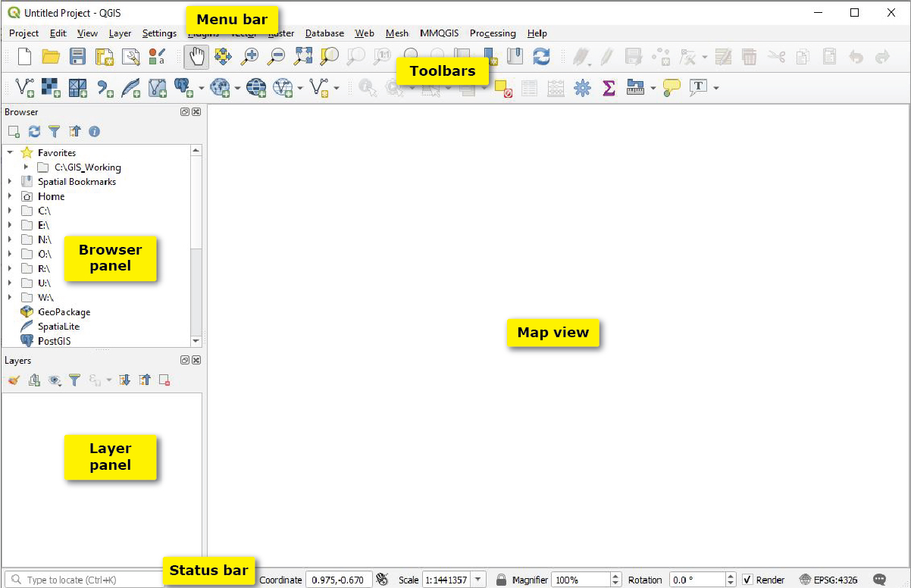

Summary and Setup
New to Python or GIS? Start here. This module teaches the foundations that every other module in the curriculum builds on: how to run Python notebooks in Google Colab, how to work with tables and charts, how to handle maps, rasters and coordinate systems in Python, and how to make maps and join Census tables in QGIS. Each tool ends with a small capstone, Map Your County, that takes real Census data to a finished map. No experience with programming or GIS is needed.
| Episode | What you will learn | Tools |
|---|---|---|
| Introduction to Foundations | The tools of the curriculum, working in Google Colab, and where to go next | Concepts |
| Python Basics | Running cells, variables, text, lists, dictionaries, decisions, loops and functions | Python notebooks (6) |
| Working with Data | Tables with pandas and charts with matplotlib | Python notebooks (2) |
| Geospatial Python Basics | Map layers with GeoPandas, coordinate reference systems, attribute and spatial joins, and rasters with rasterio | Python notebooks (4) |
| Map Your County in Python | Capstone: a Census table to a finished, shareable map | Python notebook (1) |
| Getting Started with QGIS | Loading data from the web, styling layers, a choropleth map and a finished layout | QGIS |
| Tables, Joins and Selections in QGIS | Joining Census tables, rates in the Field Calculator, and selecting by expression | QGIS |
| Map Your County in QGIS | Capstone: the same map, made in QGIS | QGIS |
The Python episodes (2 to 5) and the QGIS episodes (6 to 8) are independent: follow one tool, or both.
Each Python notebook takes 15 to 25 minutes, covers one idea, reads its data straight from the web, and ends with an exercise and its solution.
Prerequisites
- A Google account, to open the notebooks in Google Colab
- A computer where you can install QGIS, for the QGIS episodes
- Nothing else: no programming or GIS experience is assumed
The Setup page is the central setup guide for the whole curriculum: Google Colab, installing QGIS, and getting a Census API key.
This module is part of Enabling the Geospatial Turn in the Social Sciences, a set of training modules developed at Purdue University with support from the National Science Foundation.
This page is the central setup guide for the whole curriculum. Other modules link here instead of repeating these steps. Everything is free.
| You need | For | Section |
|---|---|---|
| A Google account | Running notebooks in Google Colab | Part 1 |
| QGIS installed on a computer | QGIS episodes (this module, Data Collection, Data Visualization, Case Studies) | Part 2 |
| A Census API key | Notebooks that download Census data (Data Collection, Data Analysis, Case Studies) | Part 3 |
Part 1: Google Colab
Colab runs Jupyter notebooks in your web browser, so there is nothing to install.
- Sign in to a Google account (any Gmail account works).
- Click a notebook link in any episode’s Notebooks table. It opens in Colab.
- Choose File > Save a copy in Drive so your changes are kept.
- Run cells from top to bottom: click a cell and press Shift + Enter.
- If Colab warns that the notebook was not written by Google, click Run anyway.
All notebooks read their data straight from the web, so you never
need to download data by hand. pandas, matplotlib and GeoPandas come
installed in Colab; when a notebook needs anything else, its first cell
installs it with !pip install.
Part 2: Install QGIS
QGIS is a free, open source Geographic Information System for viewing, analyzing and mapping spatial data.
- Go to https://qgis.org and click Download.
- Choose the Long Term Release (LTR) version, the
most stable one.
-
Windows: the standalone installer
(
.msi) -
macOS: the macOS installer (
.dmg). The first time you open QGIS, you may need to right-click the app and choose Open to get past the security warning. - Linux: follow the instructions for your distribution on the QGIS download page
-
Windows: the standalone installer
(
- Run the installer and keep the default settings.
- Open QGIS Desktop (not “QGIS with GRASS” or other variants, if several are listed).
The QGIS window

| Part | What it does |
|---|---|
| Menu bar | All commands, organized by topic (Project, Layer, Vector, Raster and so on) |
| Toolbars | Shortcuts for common tools such as pan, zoom and identify |
| Browser panel | Your files, databases and web sources, including XYZ Tiles basemaps |
| Layers panel | The layers in your project. Layers at the top are drawn on top. |
| Map view (canvas) | Where the map is displayed |
| Status bar | Coordinates under the cursor, map scale and the project’s coordinate system (EPSG code) |
If a panel is missing, turn it back on with View > Panels.
Part 3: Get a Census API key
The U.S. Census Bureau’s data API refuses requests without a key. Every learner needs their own key. It is free and takes a few minutes.
- Go to https://api.census.gov/data/key_signup.html.
- Enter your organization (for example, Purdue University) and your email address, and agree to the terms.
- Check your email. The key arrives within a few minutes.
- Click the activation link in the email. The key does not work until you do.
- Paste the key where a notebook asks for it.
Treat the key like a password: do not post it online or leave it in a notebook you share.
Optional: Python on your own computer
Colab is the recommended way to follow the curriculum. If you prefer to work offline, install Anaconda and create an environment with the main libraries:
BASH
conda create -n spatialturn -c conda-forge python=3.11 pandas geopandas matplotlib mapclassify jupyterlab
conda activate spatialturn
jupyter labThen download a notebook from Colab (File > Download > Download .ipynb) and open it in JupyterLab. The data is still read from the web, so you need an internet connection.
Troubleshooting
| Problem | Fix |
|---|---|
A Colab cell gives NameError
|
A cell above it was skipped; use Runtime > Run before |
A Colab cell gives ModuleNotFoundError
|
Run the !pip install cell at the top of the notebook
first |
| Colab disconnected and forgot everything | Reconnect, then Runtime > Run all |
| QGIS will not open on macOS | Right-click the app, choose Open, then confirm |
| The Browser or Layers panel is missing | View > Panels, then tick the panel |
| A layer loaded from a web address shows nothing | Right-click the layer and choose Zoom to Layer; check that the address was pasted completely |
| The basemap is blank | Check your internet connection; XYZ basemaps need to be online |
| The Census API returns “Missing Key” or “Invalid Key” | Check that you clicked the activation link, and that the key was pasted completely |